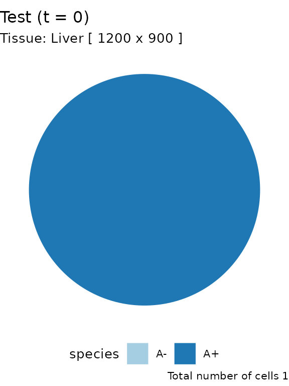
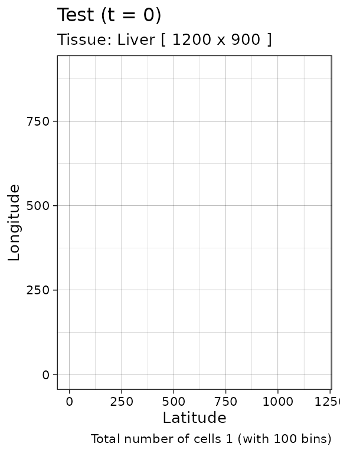
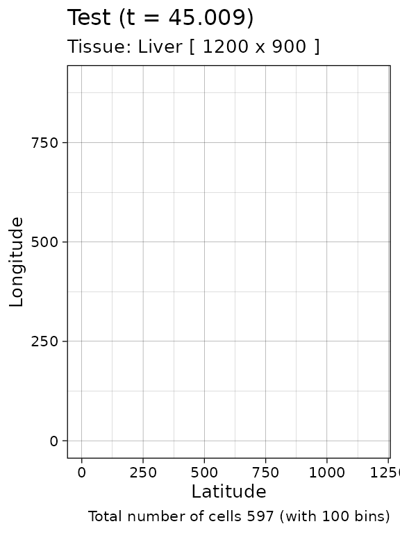
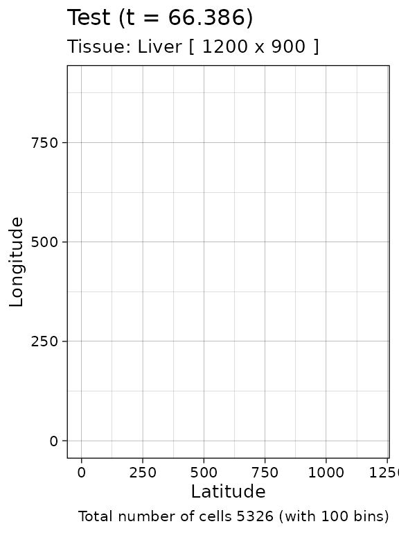
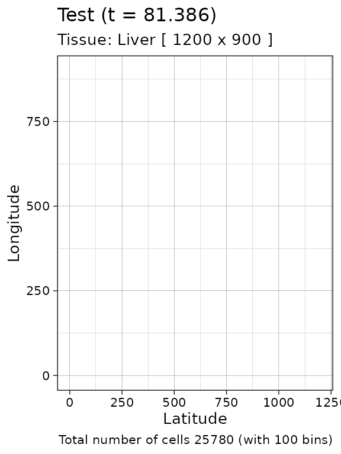
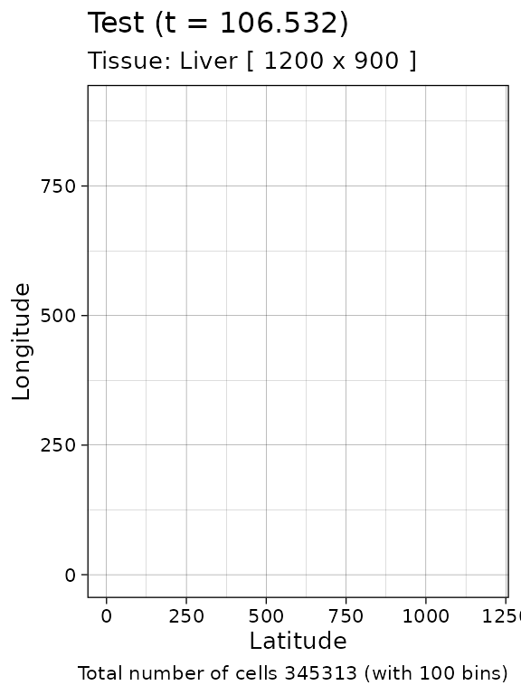
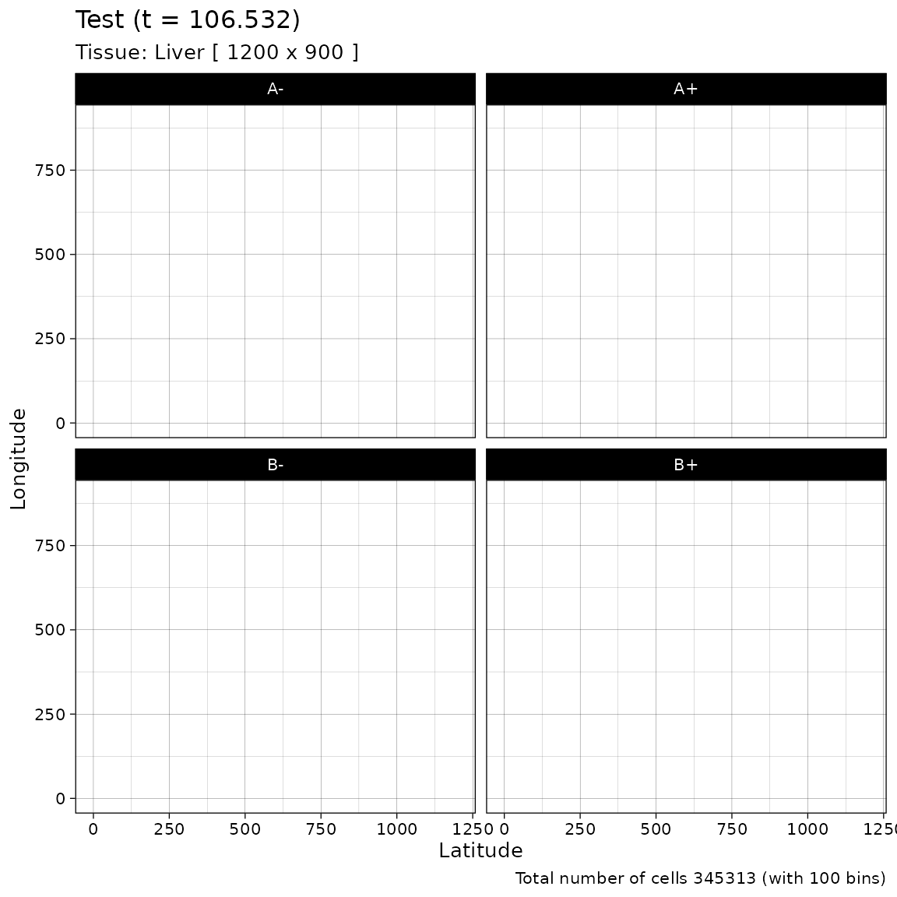
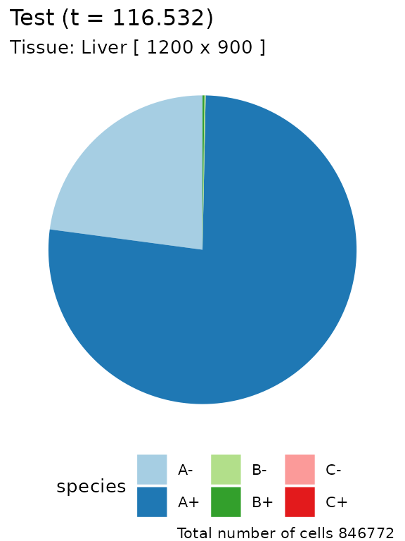
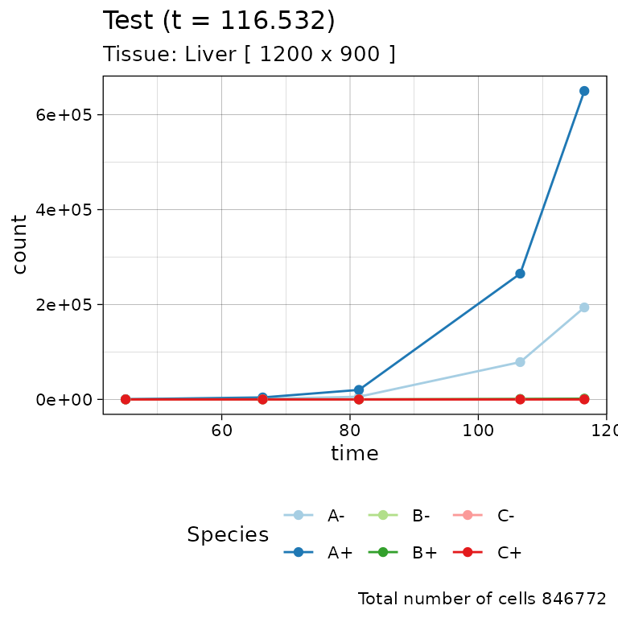
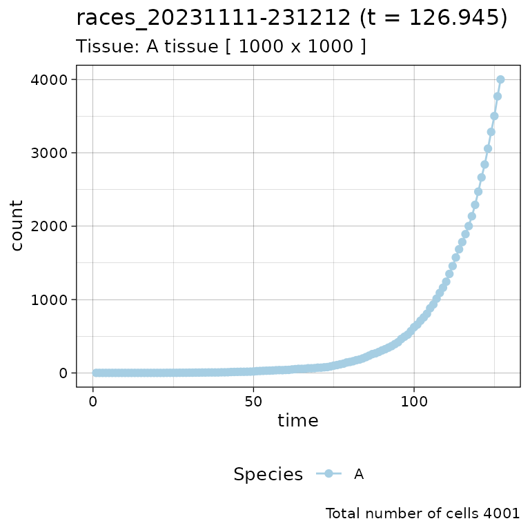

library(rRACES)To simulate a tissue the following steps are required:
- creation of an object of the S4 class
Simulation, which describes a tissue; - introduction of cells in the tissue;
- actual simulation.
The simulation can be programmed thanks to the possibility of advancing the simulation clock in various ways, and adding new cell types as far as the simulation progresses. Moreover, the state of the simulation and tissue can be visualised.
This vignette shows how to simulate a tissue, the operation required before defininig samples and generating tumour molecular data (described in next vignettes).
Tissue specification
In order to perform a simulation, a new object of class
Simulation must be created.
# Default constructor
sim <- new(Simulation)This step automatically builds a 1000x1000-cells tissue - which can
host \(10^6\) cells - and sets the name
of the simulation to be races_<date>_<hour>.
The binary dump of the simulation will be saved in a directory having
the same name of the simulation. A custom name can be provided by using
a further parameter during the simulation creation.
# Call your simulation Test will save everything in a 'Test' folder
sim <- new(Simulation, "Test")Class Simulation exports a print method
that can be used to get information on the current object
sim
#> ── rRACES D S M Test ──────────────────── ▣ A tissue [1000x1000] ⏱ 0 ──
#>
#> ======= === === === ======
#> species λ δ ε counts
#> ======= === === === ======
#> ======= === === === ======The print method informs of:
- the simulation name;
- the tissue size and the current simulation clock;
- a table of cell types (species) simulated, which is empty initially.
The sim object exposes methods to get information about
the simulation and control it.
# Get the simulation directory, i.e., "Test"
sim$get_name()
#> [1] "Test"
# Get the tissue size, i.e., c(1000,1000)
sim$get_tissue_size()
#> [1] 1000 1000Custom tissue
We can change the tissue size and label it with a name.
# Set the tissue name and size to different values
sim$update_tissue("Liver", 1200, 900)
# Get the tissue name, i.e., "Liver"
sim$get_tissue_name()
#> [1] "Liver"
# Get the tissue size, i.e., c(1200,900)
sim$get_tissue_size()
#> [1] 1200 900Species evolution
In order to simulate the evolution of some species we need to add
them to sim. This process defines the evolutionary
parameters of the species.
Genotypes and epistates
A species in RACES is a combination of a genotype and an epigenotype.
The genotype - at this point in the simulation - is just a name
(A, B etc); at later stage, this could be
linked to specific mutations of interest. The epigenotype is a simple
binary approximation for two epistates +/-,
representing a positive or negative status. This is an abstraction, and
could represent an active/inactive state linked to a promoter
methylation, for instance, or a phenotype. The main important thing is
that while the evolution across genotypes is non-reversible, the
evolution among epistates is potentially reversible.
For example, we may define two genotypes A and
B with their epistates +/-,
obtaining 4 distinct species :
-
A+andA-, as a proxy for the genotypeAwith the reversible+/-marker; -
B+andB-, as a proxy for the genotypeBwith the reversible+/-marker;
For each species and epistate, we need to define:
- growth rate \(\lambda\): the rate at which cells duplicate inheriting the epigenetic marker;
- death rate \(\delta\): the rate at which cells die;
- epigenetic rate \(\epsilon\): the
rate
+-or-+at which cells of a certain epistate duplicate and flip the epigenetic marker of one of the progeny.
As an example, considering genotype A:
- growth events define:
- when one cell of type
A+creates two cells of typeA+; - when one cell of type
A-creates two cells of typeA-;
- when one cell of type
- death events define:
- when one cell of type
A+is removed from the simulation; - when one cell of type
A-is removed from the simulation;
- when one cell of type
- switch events define:
- when one cell of type
A+divides into one typeA+and one of typeA-; - when one cell of type
A-divides into one typeA-and one of typeA+.
- when one cell of type
# we begin by adding one genotype, "A"
sim$add_genotype(name = "A",
epigenetic_rates = c("+-" = 0.01, "-+" = 0.01),
growth_rates = c("+" = 0.2, "-" = 0.08),
death_rates = c("+" = 0.1, "-" = 0.01))
# updated object (counts refer to number of cells of each species)
sim
#> ── rRACES D S M Test ──────────────────────── ▣ Liver [1200x900] ⏱ 0 ──
#>
#> ======= ==== ==== ==== ======
#> species λ δ ε counts
#> ======= ==== ==== ==== ======
#> A- 0.08 0.01 0.01 0
#> A+ 0.20 0.10 0.01 0
#> ======= ==== ==== ==== ======
# Get the simulation species and their rates
sim$get_species()
#> genotype epistate growth_rate death_rate switch_rate
#> 1 A - 0.08 0.01 0.01
#> 2 A + 0.20 0.10 0.01Initial cell positioning
To be able to simulate the model, an initial cell needs to be
displaced in the tissue. We add one cell of species A+
(genotype A in epistate +) in position
(500, 500).
sim$place_cell("A+", 500, 500)Visualisation of cell counts
We can query the current state of the simulation, and extract the cell position using two getters
# Counts per species
sim$get_counts()
#> genotype epistate counts
#> 1 A - 0
#> 2 A + 1
# Cells position
sim$get_cells()
#> cell_id genotype epistate position_x position_y
#> 1 0 A + 500 500These information can be plot, either as piechar for counts, or as a spatial distribution for the whole tissue
plot_state(sim) 
plot_tissue(sim)
Note: since the plots are done with
ggplotthey can be assembled and customised.
Species evolution
There are 3 ways to let the simulation evolve:
- advancing until the number of cells in a species reaches a given threshold;
- advancing until a new time
tis reached; - advancing until a desired number of firings (of one particular event) has occurred.
Size-based forward simulation
We can run the simulation up to when we have 500 cells of species
A+
# Counts per species is now 0
sim$get_counts()
#> genotype epistate counts
#> 1 A - 0
#> 2 A + 1
sim$run_up_to_size("A+", 500)Counts per species now reports 500 for A+.
sim$get_counts()
#> genotype epistate counts
#> 1 A - 96
#> 2 A + 501
plot_tissue(sim)
Firing-based forward simulation
The number of times each event has fired is accessible as a dataframe
sim$get_firings()
#> event genotype epistate fired
#> 1 death A - 6
#> 2 growth A - 72
#> 3 switch A - 9
#> 4 death A + 344
#> 5 growth A + 874
#> 6 switch A + 39A small number of cell deaths have occurred in species
A- up to this point, so we can simulate the system until
there are 100 of them.
sim$run_up_to_event("death", "A-", 100)
# Get the number of fired event per species. The row "death", "A",
# "-" now reports 100.
sim$get_firings()
#> event genotype epistate fired
#> 1 death A - 101
#> 2 growth A - 924
#> 3 switch A - 109
#> 4 death A + 4010
#> 5 growth A + 8512
#> 6 switch A + 430
plot_tissue(sim)
Clock-based forward simulation
It is also possible to take the current simulation clock, and simulate an extra number
# Get the simulation clock
sim$get_clock()
#> [1] 66.38608
# Run the simulation for other 15 time units
sim$run_up_to_time(sim$get_clock() + 15)
# Get again the simulation clock
sim$get_clock()
#> [1] 81.38625
plot_tissue(sim)
At this point, if we query the simulation configuration we will find
more structured information (we use dplyr to filter the
query results). For convenience, the getters accept parameters to subset
the tissue.
# load dplyr to use %>%
require(dplyr)
# Get the cells in the tissue at current simulation time
sim$get_cells() %>% head()
#> cell_id genotype epistate position_x position_y
#> 1 69985 A + 408 487
#> 2 74108 A + 408 497
#> 3 51495 A - 409 487
#> 4 85055 A + 409 497
#> 5 73287 A + 409 498
#> 6 46156 A - 410 485
# Get the cells in the tissue rectangular sample having
# [500,500] and [505,505] as lower and upper corners, respectively
sim$get_cells(c(500, 500), c(505, 505)) %>% head()
#> cell_id genotype epistate position_x position_y
#> 1 72689 A + 500 500
#> 2 54473 A - 500 501
#> 3 48193 A - 500 502
#> 4 74612 A + 500 503
#> 5 84434 A + 500 504
#> 6 83999 A + 500 505
# Get the cells in the tissue having epigenetic state "-"
sim$get_cells(c("A", "B"), c("-")) %>% head()
#> cell_id genotype epistate position_x position_y
#> 1 51495 A - 409 487
#> 2 46156 A - 410 485
#> 3 51557 A - 410 504
#> 4 59394 A - 411 488
#> 5 91066 A - 411 514
#> 6 51163 A - 412 501
# Get the cells in the tissue having epigenetic state "-" and,
# at the same time, belonging to rectangular sample bounded by
# [500,500] and [505,505] as lower and upper corners, respectively
sim$get_cells(c(500, 500), c(505, 505), c("A", "B"), c("-")) %>% head()
#> cell_id genotype epistate position_x position_y
#> 1 54473 A - 500 501
#> 2 48193 A - 500 502
#> 3 86441 A - 501 500
#> 4 78265 A - 501 501
#> 5 86442 A - 501 502
#> 6 79073 A - 504 500Note that rRACES has method to select specific cells from the tissue.
For example, we can randomly select one cell in the genotype
A
# Stochastic sampling from the whole tissue
sim$choose_cell_in("A")
#> cell_id genotype epistate position_x position_y
#> 1 68158 A + 481 575
# Calling it again may result in a different cell
sim$choose_cell_in("A")
#> cell_id genotype epistate position_x position_y
#> 1 68178 A + 569 529
# Constrain sampling in the tissue rectangular selection [500,550]x[350,450]
sim$choose_cell_in("A", c(500, 350), c(550, 450))
#> cell_id genotype epistate position_x position_y
#> 1 87012 A + 502 426Evolving species by driver events
So far, the simulation contains a single genotype A. In
general, we might want to consider the case of multiple clones
with different genotypes.
At any time-point in the simulation rRACES allows to insert a new
genotype. To add a new genotype B – and therefore new
species B+ and B- - as descending from
A,we need to:
locate one cell of genotype
Ain the tissue, which is where we will inject the new clone;add the specifics of genotype
B(viaadd_genotype, as we did forA)implement the change of the cell of genotype
Ato a cell of genotypeB;
We locate a random cell and add the genotype
# Sampled cell
cell <- sim$choose_cell_in("A")
cell
#> cell_id genotype epistate position_x position_y
#> 1 68158 A + 481 575
# Add genotype
sim$add_genotype(name = "B",
epigenetic_rates = c("+-" = 0.05, "-+" = 0.05),
growth_rates = c("+" = 0.3, "-" = 0.3),
death_rates = c("+" = 0.05, "-" = 0.1))Then we inject the cell, and simulate a little bit.
sim$mutate_progeny(cell, "B")
# Generated event A -> B either in + or - species
sim$get_counts()
#> genotype epistate counts
#> 1 A - 5702
#> 2 A + 20078
#> 3 B - 0
#> 4 B + 1
# Simulation
sim$run_up_to_size("B+", 1000)
plot_state(sim) 
plot_tissue(sim)
# Facet on species via ggplot
library(ggplot2)
plot_tissue(sim) + facet_wrap(~species)
If, at this point in the simulation, we would like to generate a new
genotype C from one of the cells having genotype
A in the rectangle \([450,500]\times [550, 600]\), we need
to:
randomly select one cell among those of
Alaying in \([450,500]\times [550, 600]\) by callingchoose_cell_insetup the new genotype
Ccall the
mutate_progenymethod
cell <- sim$choose_cell_in("A", c(450, 550), c(500, 600))
sim$add_genotype(name = "C",
epigenetic_rates = c("+-" = 0.1, "-+" = 0.1),
growth_rates = c("+" = 0.2, "-" = 0.4),
death_rates = c("+" = 0.1, "-" = 0.01))
sim$mutate_progeny(cell, "C")
# Everything should be correct
sim$get_cell(cell$position_x, cell$position_y)
#> cell_id genotype epistate position_x position_y
#> 1 1221399 C - 487 566
sim$run_up_to_time(sim$get_clock() + 10)
plot_state(sim)
plot_tissue(sim)Other operations
Injection of cells over a tissue
We can retrieve the simulation initial condition by calling the
Simulation method get_added_cells()
sim$get_added_cells()
#> genotype epistate position_x position_y time
#> 1 A + 500 500 0This operation is generic because, technically, multiple cells could be manually added. Was that the case, this dataframe would report all of them.
Time series data
It is convenient sometimes to plot a time series of a simulation, reporting species or firing counts over time. Since rRACES is programmable, it is immediate to make a for-loop algorithm and collect the simulation data over time.
However, this is not required because at the end of any
run_to_* methods, RACES stores the data about the number of
species cells and that of event firings. rRACES makes these data
accessible via specific getters.
# The firings
sim$get_firing_history() %>% head()
#> event genotype epistate fired time
#> 1 death A - 6 45.00946
#> 2 growth A - 72 45.00946
#> 3 switch A - 9 45.00946
#> 4 death A + 344 45.00946
#> 5 growth A + 874 45.00946
#> 6 switch A + 39 45.00946
# For example, total number of the deaths on `B+` at the end of the
# previous calls of the `run_to_*` methods
sim$get_firing_history() %>%
filter(event == "death", genotype == "B", epistate == "-")
#> event genotype epistate fired time
#> 1 death B - 0 45.00946
#> 2 death B - 0 66.38608
#> 3 death B - 0 81.38625
#> 4 death B - 186 106.53202
#> 5 death B - 1740 116.53203
# The counts
sim$get_count_history() %>% head()
#> genotype epistate count time
#> 1 A - 96 45.00946
#> 2 A + 500 45.00946
#> 3 B - 0 45.00946
#> 4 B + 0 45.00946
#> 5 C - 0 45.00946
#> 6 C + 0 45.00946The time-series can be plot using plot_timeseries
# Time-series plot
plot_timeseries(sim)
rRACES offers the possibility of performing a coarse-grained storing
of this history, independently of the actual data stored after the
evaluation of a run_to_* method. To do this, we can set the
Simulation property history_delta (default
\(1\)). By default,
history_delta is set to \(0\), but it can be set to any real value
\(d\) so to dump the simulation
statistics every \(d\) time units.
# Example time-series on a new simulation
sim_ts <- new(Simulation)
sim_ts$add_genotype(name = "A",
growth_rates = 0.08,
death_rates = 0.01)
sim_ts$place_cell("A", 500, 500)
# every time-point
sim_ts$history_delta <- 1
sim_ts$run_up_to_size("A", 4000)As above, the finer time-series can be depicted by using
plot_timeseries.
# Time-series plot
plot_timeseries(sim_ts)
#> Warning in RColorBrewer::brewer.pal(paired_species$species %>% length(), : minimal value for n is 3, returning requested palette with 3 different levels
Avoiding drift
Any species that has a death rate greater than 0 can become extinct as soon as it appears due to the premature death of the progenitor cell. This phenomenon is called drift, and occurs spontaneously in nature. It makes it difficult to simulate an be confident of what species are in the model.
Users can avoid drift by setting the death activation level. This value is the minimum number of cells that enables cell death in a species. The cell of a species \(S\) can die if and only if that $S$ has reached the death activation level at least once during the simulation.
This threshold holds for all the species and it is set to 1 by default.
sim$death_activation_level
#> [1] 1However, it can be risen as much as we want to avoid drift
sim$death_activation_level <- 50